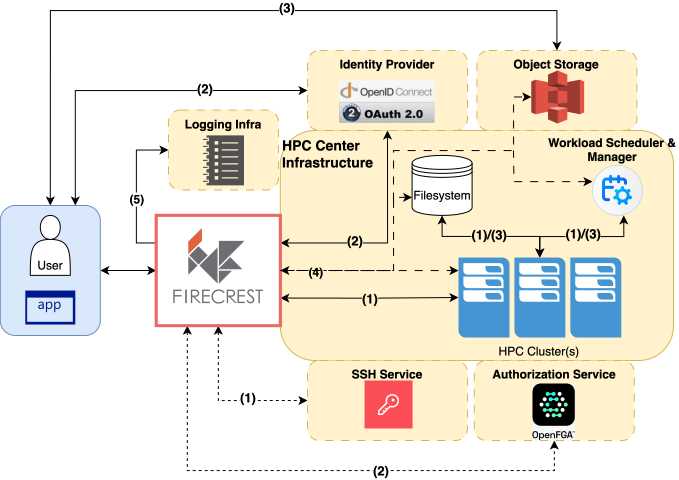
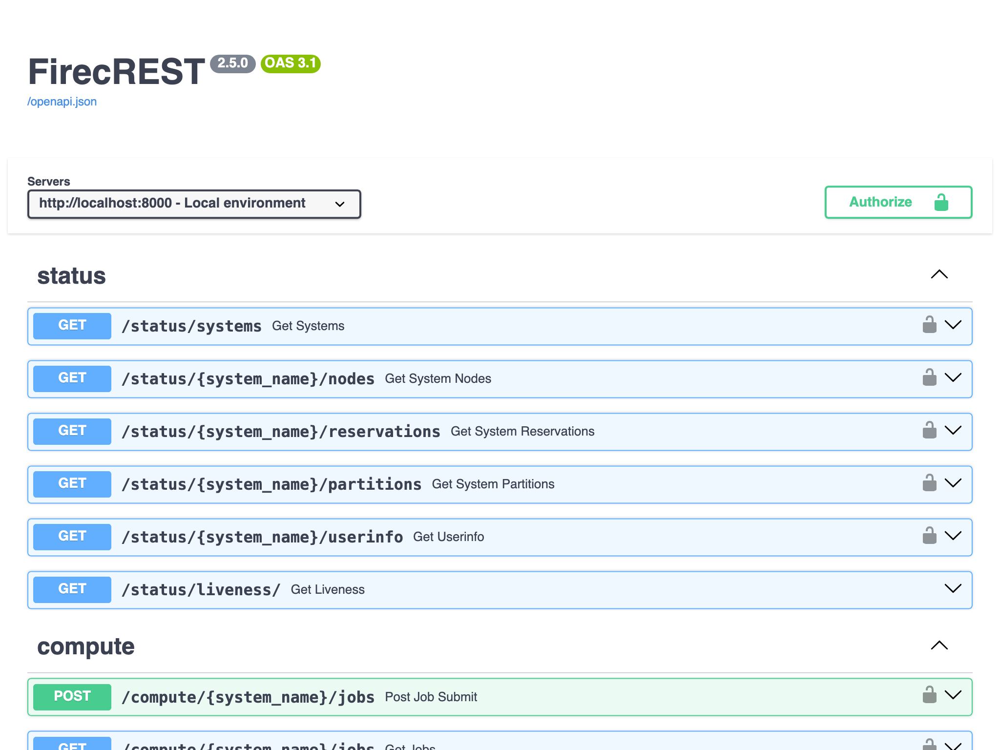
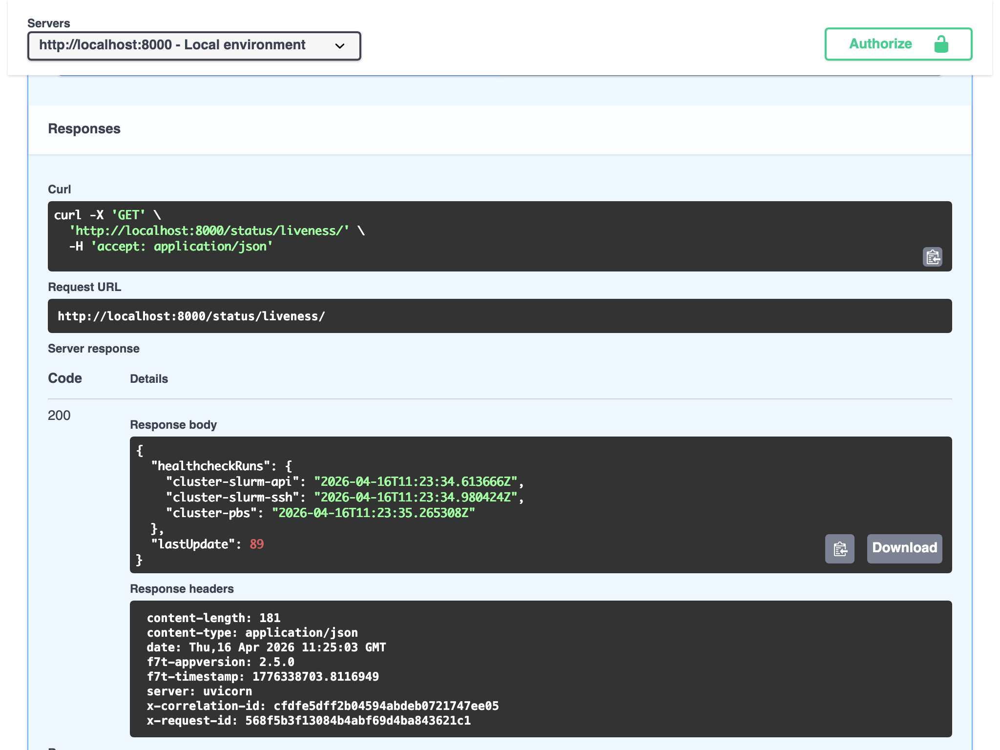
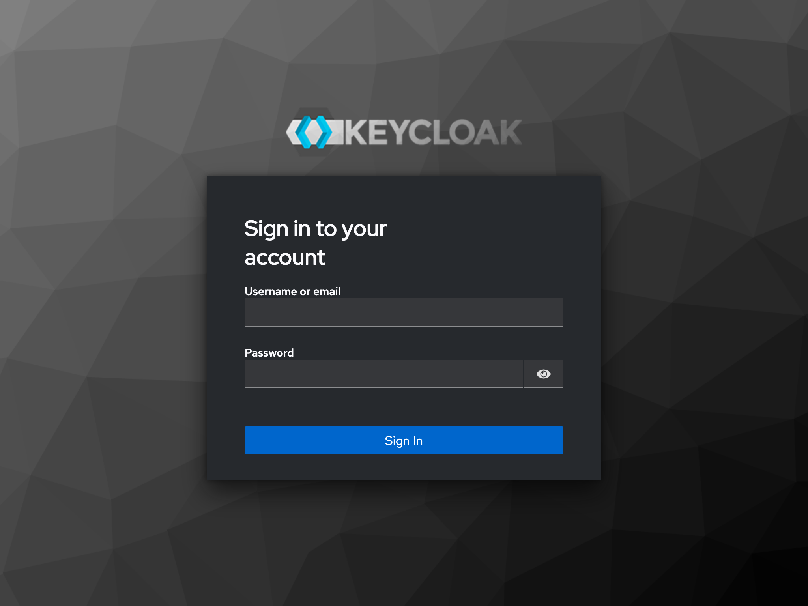
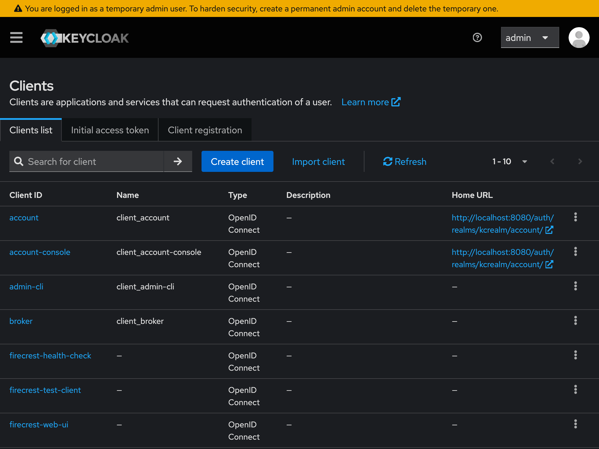
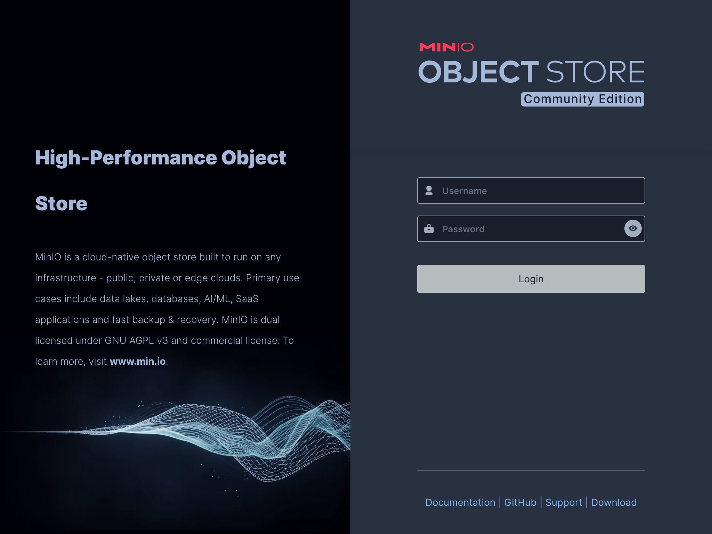
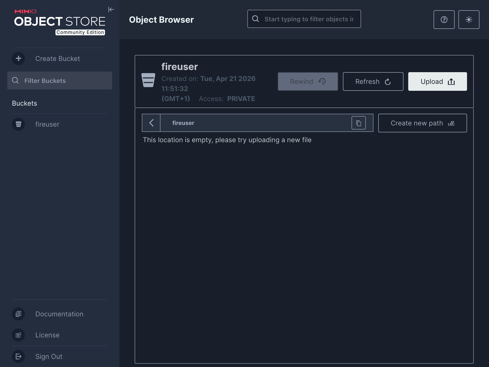

FirecREST in your laptop¶
Introduction¶
The FirecREST repository contains the definition for a preconfigured containerized FirecREST environment which can be deployed locally.
In addition to FirecREST, the environment includes a minimal set of networked containers representing a simple API-accessible supercomputing infrastructure: IAM service, S3 compatible storage, batch compute cluster.
The environment is defined using the Compose specification, and can be deployed locally using a Compose-compatible tool, such as Docker Compose
The containerized environment is useful for
- Understanding how FirecREST interacts with other infrastructure components in a supercomputing centre
- Exploring how FirecREST can be configured to interact with your own local supercomputing infrastructure
- Testing and developing user workflows with FirecREST
Learning objectives¶
This demo will provide attendees with an introduction to the containerized FirecREST environment, covering
- Bringing up the containerized environment locally (e.g. on a laptop)
- The structure of the environment and relationship between components
- Making API calls to FirecREST within the environment
- Interacting with other components of the environment
After the session, attendees will be equipped to deploy the environment for themselves and explore the capabilities of FirecREST in a self-contained environment.
0. Setup¶
The host on which the containerised environment is deployed requires the following:
- OCI container engine (Podman, Docker, nerdctl)
- Compose compatible orchestrator (Docker Compose, Podman Compose, nerdctl)
- Tool for making HTTP requests (curl, httpie, Python requests)
- Tool for parsing JSON (jq, yq, Python standard library json)
- Tool for decoding base64 strings (Python interpreter, base64)
- Git version control system
In this demo, the tools in bold above are used, but the instructions should generalise to other combinations.
podman compose
This demo uses the Podman container engine and Docker Compose orchestrator using the podman compose command. Docker Compose is the reference implementation of the Compose spec and widely supported.
Confusingly, running the podman compose command does not imply using the Podman Compose orchestrator. The podman compose command will default to using Docker Compose as orchestrator if available on the system (but can also use Podman Compose as orchestrator).
Quick start: Lima
Lima is a tool for easily launching and managing virtual machines. It can be used to quickly bring up a virtual machine suitable for deploying and working with the containerised environment:
Install Lima, e.g. from Homebrew
Create a VM instance from the Podman template named f7t-podman
Start the instance
Start a shell in the instance
Upgrade packages and install Docker Compose (plus other useful tools)
Set some Podman configuration values
mkdir -v -p ${XDG_CONFIG_HOME:-${HOME}/.config}/containers
cat > ${XDG_CONFIG_HOME:-${HOME}/.config}/containers/containers.conf <<EOF
[containers]
label = false
[engine]
compose_providers = ["/usr/bin/docker-compose"]
compose_warning_logs = false
EOF
After following the above steps, the VM can be used to work through the steps in this guide.
When finished with the Lima VM, stop it by running the following on the host
1. Deploy the environment¶
Clone the firecrest-v2 GitHub repository and check out release v2.5.0:
Bring up the Compose project:
This will pull and build the necessary container images and bring up the containerised environment as defined in docker-compose.yml.
The first time this is done, it may take a few minutes to completely bring up the environment.
Confirm that the Compose project is running
$ podman compose ls
NAME STATUS CONFIG FILES
firecrest-v2 running(5) /path/to/firecrest-v2/docker-compose.yml
2. Explore the environment¶
List the running containers in the project:
$ podman compose -p firecrest-v2 ps
NAME IMAGE COMMAND SERVICE CREATED STATUS PORTS
firecrest-v2-firecrest-1 docker.io/library/firecrestv2:latest "sh -c python3 -Xfro…" firecrest 16 minutes ago Up 16 minutes 127.0.0.1:5678->5678/tcp, 127.0.0.1:8000->5000/tcp
firecrest-v2-keycloak-1 quay.io/keycloak/keycloak:26.0.7 "start-dev --http-re…" keycloak 16 minutes ago Up 17 minutes 127.0.0.1:8080->8080/tcp, 8443/tcp, 127.0.0.1:9090->9000/tcp
firecrest-v2-minio-1 docker.io/minio/minio:latest "minio server /data …" minio 16 minutes ago Up 17 minutes 127.0.0.1:9000-9001->9000-9001/tcp
firecrest-v2-pbs-1 docker.io/library/openpbs:23.06.06 "/usr/bin/supervisord" pbs 16 minutes ago Up 17 minutes 5432/tcp, 15004-15007/tcp, 127.0.0.1:15001-15003->15001-15003/tcp, 127.0.0.1:2223->22/tcp
firecrest-v2-slurm-1 docker.io/library/slurm:latest "" slurm 16 minutes ago Up 16 minutes 127.0.0.1:5665-5666->5665-5666/tcp, 127.0.0.1:6820->6820/tcp, 127.0.0.1:2222->22/tcp
The "Service" column shows how the containers are mapped to the Compose services defined in docker-compose.yml.
The "Ports" column shows which ports the containerised services are bound to.
The services running in the Compose project map to the components of the full FirecREST architecture:

| Architecture component | Containerised service |
|---|---|
| Identity provider | keycloak |
| Workload scheduler & manager | slurm and pbs |
| Object storage | minio |
View the FirecREST Swagger UI in a web browser by going to http://localhost:8000/docs:

It is possible to make requests to the API endpoints from the Swagger UI. For example, selecting the "Try it out" button and then "Execute" button for the unauthenticated /status/liveness/ endpoint makes a GET request and the response is displayed in the browser.

For this demo, we will be exploring the API using command line tools.
3. Acquire an access token¶
In order to make authorized calls to the FirecREST API, we need to acquire an OpenID Connect/OAuth 2.0 access token.
In the containerised environment, FirecREST has been configured to validate the signature on the access token (JSON Web Token, JWT) using the public key advertised by Keycloak.
We can acquire an access token from Keycloak using curl by making a request to Keycloak's token endpoint using the client credentials grant.
First, set some environment variables:
export FIRECREST_CLIENT_ID="firecrest-test-client"
export FIRECREST_CLIENT_SECRET="wZVHVIEd9dkJDh9hMKc6DTvkqXxnDttk"
export AUTH_TOKEN_URL="http://localhost:8080/auth/realms/kcrealm/protocol/openid-connect/token"
Then make a HTTP request to the token endpoint, extracting the access token from the response using jq and storing in an environment variable:
export ACCESS_TOKEN=$(curl -s ${AUTH_TOKEN_URL} \
-d "grant_type=client_credentials" \
-d "client_id=${FIRECREST_CLIENT_ID}" \
-d "client_secret=${FIRECREST_CLIENT_SECRET}" \
| jq -r '.access_token')
Client credentials flow
Keycloak has been configured with a client that has the OAuth 2.0 client credentials flow enabled. This enables a client application to exchange a client ID and secret for an access token.
The client credentials flow is often used for machine-to-machine communication, where an application is authenticating on behalf of itself, rather than a human user, see the auth0 docs for details.
During the setup process for accessing FirecREST in production, client credentials were generated using the CSCS Developer portal.
For the containerised deployment, the client credentials used to obtain tokens from Keycloak for FirecREST API access are preconfigured and static:
- Client ID: firecrest-test-client
- Client secret: wZVHVIEd9dkJDh9hMKc6DTvkqXxnDttk
In production secure, secret credentials should be used!
The JWT is a sequence of "."-delimited URL-safe base64-encoded values (<header>.<payload>.<signature>). We can decode the payload with a short Python script, and then pretty-print this with jq:
DECODED_PAYLOAD=$(python3 -c "
import os
import base64
payload = os.environ['ACCESS_TOKEN'].split('.')[1]
padding = '=' * ((4 - len(payload) % 4) % 4)
print(base64.urlsafe_b64decode(payload + padding).decode())
")
jq <<<"${DECODED_PAYLOAD}"
The result will look something like the following
{
"exp": 1776440235,
"iat": 1776439935,
"jti": "795cad00-a876-4df4-aa6a-cbb1779b35fc",
"iss": "http://localhost:8080/auth/realms/kcrealm",
"aud": [
"Firecrest-v2",
"account"
],
"sub": "fireuser",
"typ": "Bearer",
"azp": "firecrest-test-client",
"acr": "1",
"realm_access": {
"roles": [
"default-roles-kcrealm",
"offline_access",
"uma_authorization"
]
},
"resource_access": {
"account": {
"roles": [
"manage-account",
"manage-account-links",
"view-profile"
]
}
},
"scope": "firecrest-v2 profile email",
"email_verified": false,
"clientId": "firecrest-test-client",
"clientHost": "192.168.240.3",
"preferred_username": "service-account-firecrest-test-client",
"clientAddress": "192.168.240.3",
"username": "fireuser"
}
The access token is only valid for a few minutes, so will need to be requested periodically. We can check the issued at (iat) and expiration time (exp) claims to see the length of time the token is valid is 5 minutes:
$ jq 'pick(.iat, .exp) | map_values(todateiso8601)' <<<"$DECODED_PAYLOAD"
{
"iat": "2026-04-21T09:24:49Z",
"exp": "2026-04-21T09:29:49Z"
}
4. Call the FirecREST API¶
The access token authorizes access to FirecREST API endpoints.
Call the /status/systems endpoint, passing the access token in the HTTP Authorization request header using the bearer scheme:
This will produce a lot of output, so it is helpful to filter down to the information we are interested in, e.g. cluster names
$ curl -sS -H "Authorization: Bearer ${ACCESS_TOKEN}" \
http://localhost:8000/status/systems | jq '.systems[] | .name'
"cluster-slurm-api"
"cluster-slurm-ssh"
"cluster-pbs"
Find information about the partitions on cluster-slurm-ssh by calling the /status/{system_name}/partitions endpoint:
curl -sS -H "Authorization: Bearer ${ACCESS_TOKEN}" \
http://localhost:8000/status/cluster-slurm-ssh/partitions | jq '.'
The response is a JSON object containing partition information on cluster cluster-slurm-ssh
{
"partitions": [
{
"name": "part01",
"cpus": 2,
"totalNodes": 1,
"partition": "UP"
},
{
"name": "part02",
"cpus": 2,
"totalNodes": 1,
"partition": "UP"
},
{
"name": "xfer",
"cpus": 2,
"totalNodes": 1,
"partition": "UP"
}
]
}
Submit a job to the cluster-slurm-ssh cluster using the /compute/{system_name}/jobs endpoint. The job is submitted by a POST request to this endpoint with a JSON body:
curl -sS -H "Authorization: Bearer ${ACCESS_TOKEN}" \
--json @- http://localhost:8000/compute/cluster-slurm-ssh/jobs <<"EOF"
{
"job": {
"script": "#!/bin/bash\necho \"Hello world from $(hostname)\"\nsleep 600\n",
"working_directory": "/home/fireuser",
"standardOutput": "test_job.out"
}
}
EOF
This will return the job ID.
We can check that the job is running and inspect the contents of the output file by running commands inside the Slurm container, e.g.
$ podman compose -p firecrest-v2 exec slurm squeue --jobs 1
JOBID PARTITION NAME USER ST TIME NODES NODELIST(REASON)
1 part01 sbatch fireuser R 0:59 1 localhost
The same information can be acquired through calls to the FirecREST API endpoints /compute/{system_name}/jobs/{job_id} and /compute/{system_name}/ops/view, e.g.
$ curl -sS -H "Authorization: Bearer ${ACCESS_TOKEN}" \
http://localhost:8000/compute/cluster-slurm-ssh/jobs/1 \
| jq '.jobs[] | pick(.jobId, .name, .status)'
{
"jobId": "1",
"name": "sbatch",
"status": {
"state": "RUNNING",
"stateReason": "None",
"exitCode": 0,
"interruptSignal": 0
}
}
$ curl -sS -H "Authorization: Bearer ${ACCESS_TOKEN}" \
--url-query "path=/home/fireuser/test_job.out" \
http://localhost:8000/filesystem/cluster-slurm-ssh/ops/view \
| jq '.'
{
"output": "Hello world from slurm\n"
}
In this short demo we have used curl and jq to briefly explore the FirecREST API presented in the containerised environment.
This demonstrates that any tool, language, or library capable of making HTTP requests and parsing JSON responses can be used to work with FirecREST.
When developing in Python, the PyFirecREST library provides a convenient Python wrapper for working with the API.
5. Interact with other components¶
We can also access the web interfaces and APIs of other service components.
Identity provider¶
Open the Keycloak web UI by going to http://localhost:8080/auth in a web browser

You can log in to the containerised Keycloak service with preconfigured admin credentials.
Keycloak admin credentials
For the containerised development environment, Keycloak admin credentials are set to
Username: admin
Password: admin2
In production secure, secret credentials should be used!
This is useful for exploring and developing IAM configuration associated with FirecREST. For example, opening the "Clients" page in the realm "kcrealm" will show OpenID Connect clients configured for use with FirecREST.

Object storage¶
Open the MinIO Console UI by going to http://localhost:9001 in a web browser

You can log in to the containerised MinIO service with preconfigured root access key ID and secret key.
MinIO root credentials
For the containerised development environment, MinIO root credentials are set to
Access key ID: storage_access_key
Secret access key: storage_secret_key
In production secure, secret credentials should be used!
This is useful for exploring how FirecREST uses the S3 storage backend. For example, initiating an asynchronous upload using the /filesystem/{system_name}/transfer/upload endpoint will result in the creation of a new bucket in the backend storage:
curl -sS -H "Authorization: Bearer ${ACCESS_TOKEN}" --json @- \
http://localhost:8000/filesystem/cluster-slurm-ssh/transfer/upload <<"EOF"
{
"path": "/home/fireuser/upload.bin",
"account": "users",
"transfer_directives": {
"transfer_method": "s3",
"file_size": 1073741824
}
}
EOF

6. Clean up¶
Stop the Compose project and remove associated resources:
Epilogue¶
In this demo we have briefly explored the containerised Compose environment distributed with FirecREST v2.
We have seen how this environment integrates the FirecREST API server with other model supercomputing infrastructure components, enabling evaluation, testing, and development to take place in a local context (e.g. on your laptop!).
We hope that this brief tour will provide inspiration for you to start experimenting and building with FirecREST in the containerised environment yourself.